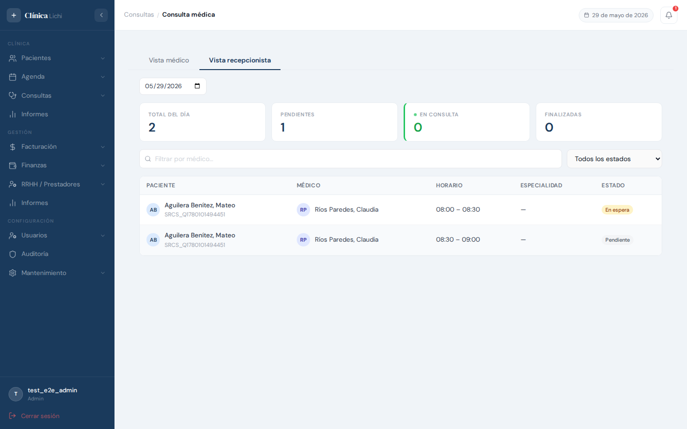
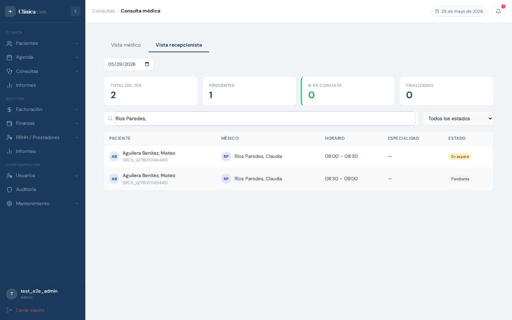
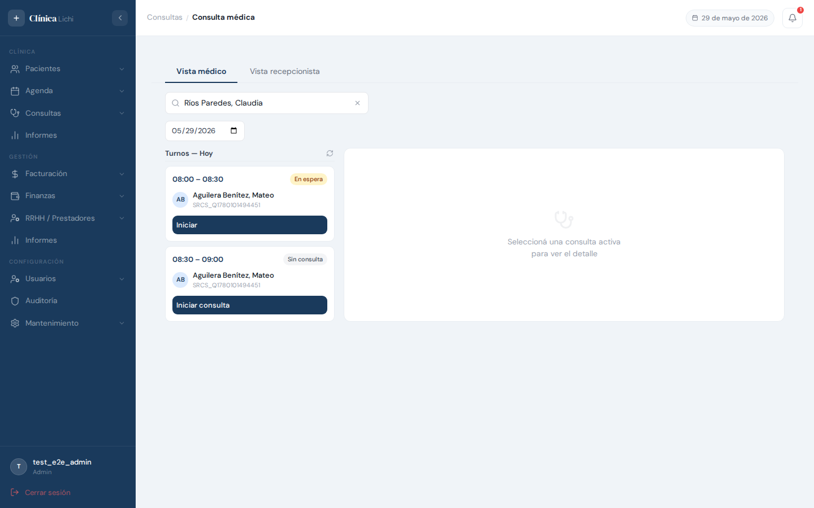
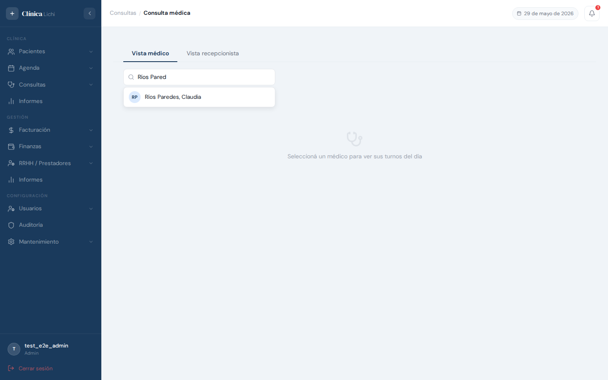
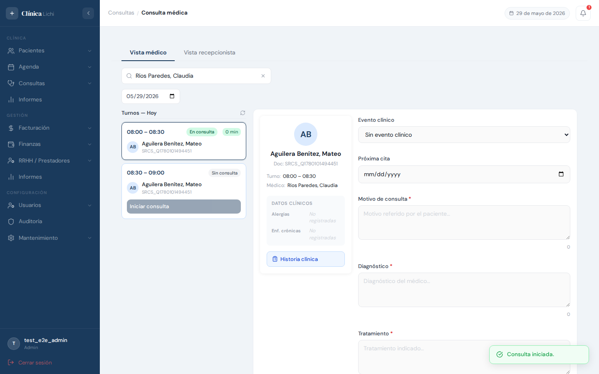
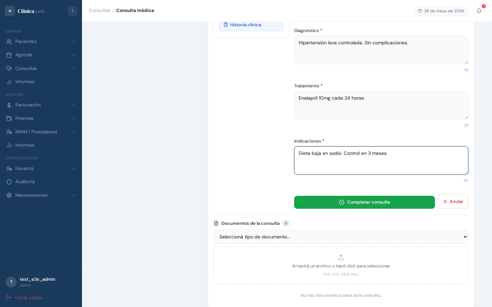
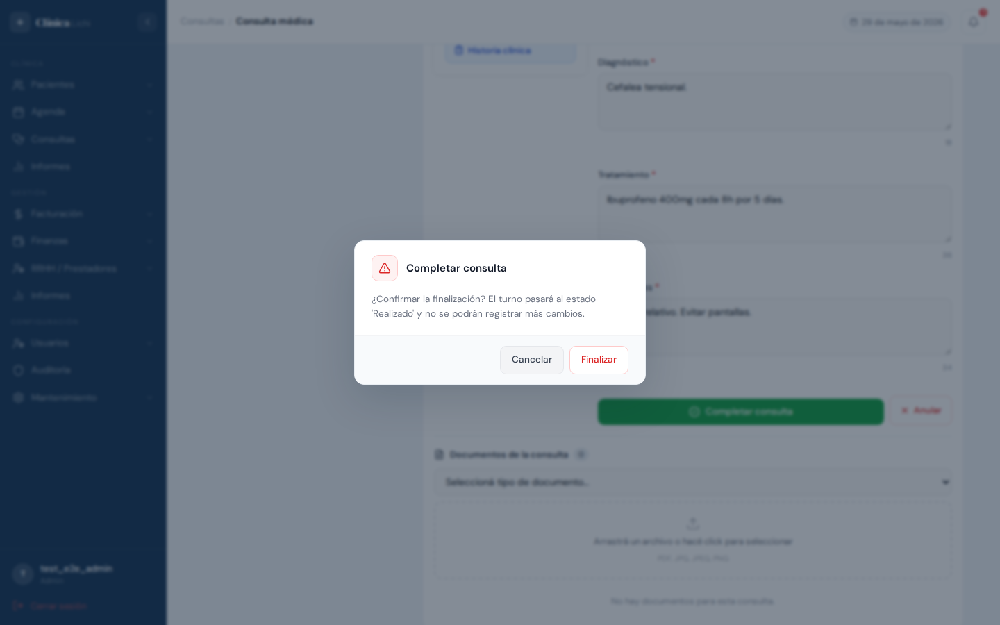
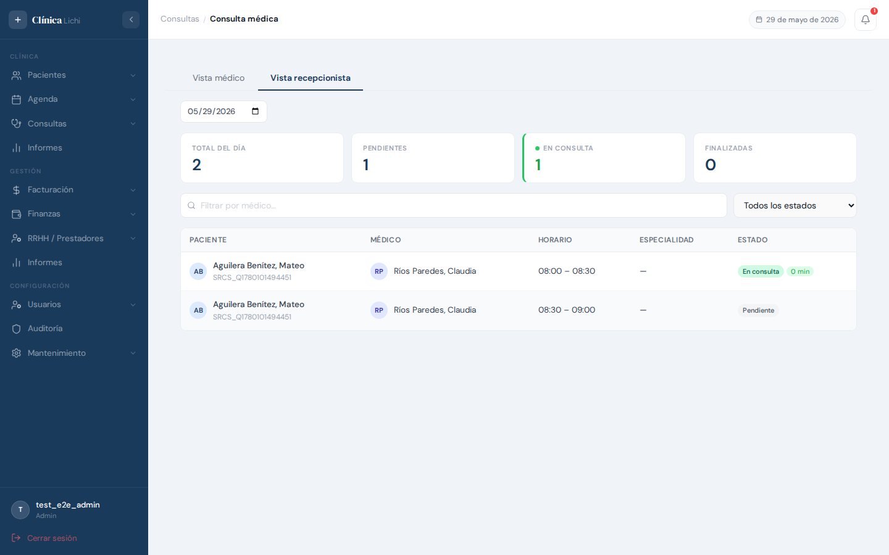

Descripción del módulo
El módulo Consulta Médica gestiona todo el ciclo de una consulta: desde el ingreso del paciente a sala de espera, pasando por el registro clínico (motivo, diagnóstico, tratamiento, indicaciones y próxima cita), hasta la finalización del acto médico. Está dividido en dos vistas complementarias:
- Vista recepcionista — panel de seguimiento en tiempo real de todos los turnos del día con su estado actual y contadores estadísticos.
- Vista médico — formulario de consulta activa con el historial clínico del paciente, carga de documentos y acciones clínicas.
| Acción | Admin | Recepcionista | Médico | Secretaria |
|---|---|---|---|---|
| Ver vista recepcionista | ✅ | ✅ | 🚫 | 🚫 |
| Ver vista médico | ✅ | 🚫 | ✅ (propio) | ✅ (asignado) |
| Crear e iniciar consulta | ✅ | 🚫 | ✅ | ✅ |
| Completar datos clínicos | ✅ | 🚫 | ✅ | ✅ |
| Finalizar / Anular consulta | ✅ | 🚫 | ✅ | ✅ |
| Editar consulta finalizada (24 h) | ✅ | 🚫 | ✅ | 🚫 |
| Cambiar fecha de vista (admin) | ✅ | 🚫 | 🚫 | 🚫 |
| Eliminar consulta (borrado lógico) | ✅ | 🚫 | 🚫 | 🚫 |
Estados de una consulta
| Estado | Color | Significado |
|---|---|---|
| Pendiente | Gris | El turno está ocupado pero aún no se registró ninguna consulta. |
| En espera | Amarillo | La consulta fue creada (el paciente está en sala de espera). |
| En consulta | Azul | La consulta fue iniciada. El médico está atendiendo al paciente. |
| Finalizada | Verde | La consulta fue completada con el registro clínico correspondiente. |
| Anulada | Rojo | La consulta fue iniciada pero cancelada antes de finalizarse. |
Acceder al módulo
En el menú lateral izquierdo, dentro del grupo Consultas, hacé clic en Consulta médica. La vista que se muestra al ingresar depende del rol:
| Rol | Vista al ingresar |
|---|---|
| Admin | Dos tabs: Vista médico (activa por defecto) y Vista recepcionista. Incluye selector de fecha en ambas vistas. |
| Recepcionista | Directamente la Vista recepcionista, sin tabs ni selector de fecha. |
| Médico | Directamente la Vista médico con su propia agenda cargada. |
| Secretaria | Vista médico del médico asignado. |
Vista recepcionista — panel del día
La vista recepcionista muestra en tiempo real el estado de todos los turnos ocupados y realizados del día, con información del paciente, médico, horario, especialidad y estado actual de la consulta.

Contadores estadísticos
En la parte superior hay cuatro contadores que se actualizan automáticamente:
| Contador | Qué cuenta |
|---|---|
| Total del día | Total de turnos ocupados y realizados para la fecha seleccionada. |
| Pendientes | Turnos sin consulta registrada aún (el paciente llegó pero no fue registrado). |
| En consulta | Consultas actualmente en curso (con punto pulsante verde). |
| Finalizadas | Consultas completadas durante el día. |
Tabla de turnos
| Columna | Descripción |
|---|---|
| Paciente | Avatar con iniciales, nombre completo y número de documento. |
| Médico | Avatar y nombre del prestador a cargo del turno. |
| Horario | Franja horaria del turno (ej: 08:00 – 08:30). |
| Especialidad | Primera especialidad del horario del prestador. |
| Estado | Badge de color con el estado actual de la consulta. Si está En consulta, muestra además el tiempo transcurrido en minutos con código de color por urgencia. |
Indicador de tiempo en consulta
Para turnos con estado En consulta, el contador de minutos usa código de colores según el tiempo transcurrido:
- Verde — menos de 15 minutos
- Amarillo — entre 15 y 30 minutos
- Rojo — más de 30 minutos
Buscar y filtrar turnos (vista recepcionista)

Filtro por médico
El campo de texto "Filtrar por médico…" reduce la tabla en tiempo real mostrando solo los turnos del prestador cuyo nombre contiene el texto ingresado. Borrá el texto para volver a ver todos los turnos.
Filtro por estado
El selector desplegable permite filtrar la tabla por el estado de la consulta:
| Opción | Muestra |
|---|---|
| Todos los estados | Todos los turnos del día (valor por defecto). |
| Pendiente | Turnos sin consulta registrada. |
| En espera | Consultas creadas pero no iniciadas. |
| En consulta | Consultas actualmente en curso. |
| Finalizada | Consultas ya completadas. |
Selector de fecha (admin)
Los administradores pueden ver la vista recepcionista para cualquier fecha usando el selector de fecha en la parte superior. Al seleccionar una fecha pasada o futura, la tabla y los contadores se actualizan para esa fecha.
Vista médico — lista de turnos del día

Selección de médico (admin)
Los administradores deben seleccionar primero el médico cuya agenda desean gestionar. Para ello, escriben el nombre en el campo de búsqueda y hacen clic en el resultado del dropdown.

Columna de turnos
Una vez seleccionado el médico, aparece la columna de turnos con todos los turnos ocupados del día para ese prestador. Cada card muestra:
- Franja horaria — hora desde y hasta del turno
- Badge de estado — estado actual de la consulta (o "Sin consulta" si no hay)
- Nombre y documento del paciente
- Ticker de tiempo — si la consulta está en curso, muestra los minutos transcurridos
Solo una consulta activa a la vez
Si ya hay una consulta En consulta, los botones "Iniciar" de los otros turnos quedan deshabilitados con el mensaje "Finalizá la consulta en curso antes de iniciar otra". Esto garantiza que el médico solo atiende a un paciente a la vez.
Iniciar una consulta
Para iniciar una consulta, el médico hace clic en el botón correspondiente dentro de la tarjeta del turno. Hay dos variantes:
| Botón | Cuándo aparece | Qué hace |
|---|---|---|
| Iniciar consulta | El turno no tiene consulta registrada aún. | Crea la consulta y la inicia inmediatamente (en_espera → en_consulta en un solo paso). |
| Iniciar | El turno tiene una consulta en estado En espera. | Cambia el estado a En consulta y registra la hora de inicio. |
Al hacer clic en cualquiera de estos botones, el panel derecho se abre con el formulario de la consulta activa y aparece un mensaje de confirmación.

Completar el formulario clínico
El panel de consulta activa tiene dos columnas: información del paciente a la izquierda y el formulario clínico a la derecha.
Información del paciente (columna izquierda)
- Avatar con iniciales y nombre completo
- Número de documento, turno (hora) y médico a cargo
- Alergias conocidas y enfermedades crónicas (si están registradas)
- Botón "Historia clínica" — abre un modal con todas las consultas anteriores del paciente, con filtro por especialidad
Formulario clínico (columna derecha)
| Campo | Obligatorio para finalizar | Descripción |
|---|---|---|
| Evento clínico | No | Tipo de consulta (primer consulta, control, urgencia, etc.). |
| Próxima cita | No | Fecha sugerida para la próxima consulta. |
| Motivo de consulta | ✅ Sí | Motivo referido por el paciente. |
| Diagnóstico | ✅ Sí | Diagnóstico del médico. |
| Tratamiento | ✅ Sí | Tratamiento indicado. |
| Indicaciones | ✅ Sí | Indicaciones y recomendaciones para el paciente. |

Autoguardado
Los datos del formulario se guardan automáticamente cada 30 segundos mientras la consulta está en curso. Esto protege el trabajo del médico ante interrupciones inesperadas. No es necesario hacer clic en "Guardar" de forma manual.
Subir documentos
La sección de Documentos en el panel activo permite adjuntar archivos a la consulta (PDF, JPG, PNG). Para subir un archivo:
- Seleccioná el tipo de documento en el selector desplegable.
- Arrastrá el archivo al área de carga o hacé clic para seleccionarlo desde el explorador.
- El archivo queda adjunto a la consulta y aparece en la lista de documentos.
Finalizar o anular una consulta
Al pie del formulario clínico hay dos botones de acción: Completar consulta y Anular.
Completar consulta (Finalizar)
-
Completá los cuatro campos obligatorios: Motivo de consulta, Diagnóstico, Tratamiento e Indicaciones.
-
Hacé clic en Completar consulta. Si algún campo obligatorio está vacío, se muestra un toast de advertencia y el campo queda resaltado en rojo.
-
Aparece un diálogo de confirmación. Confirmá para finalizar.
-
La consulta queda en estado Finalizada y el turno de agenda pasa automáticamente a estado Realizado.

Anular consulta
El botón Anular cancela una consulta que ya fue iniciada (En consulta). También abre un diálogo de confirmación antes de ejecutarse. La consulta queda en estado Anulada; el turno de agenda no cambia su estado automáticamente.
Editar consulta finalizada (ventana de 24 h)
Médicos y administradores pueden corregir los datos clínicos de una consulta Finalizada dentro de las 24 horas siguientes a su cierre. Pasada esa ventana, la consulta queda bloqueada para modificaciones.
Acceder a la edición
En la vista médico, las consultas finalizadas dentro de la ventana de 24 h muestran un botón Editar (ícono de lápiz) en la tarjeta del turno. Al hacer clic, el panel de formulario se abre con los datos actuales precargados.
Indicador de tiempo restante
Al tener abierta una consulta finalizada editable, el panel muestra un banner verde con el tiempo restante para poder guardar cambios: por ejemplo, "Consulta finalizada · Tiempo restante para editar: 22h 15m".
Mensajes de error frecuentes y comportamientos esperados
Al iniciar una consulta
| Mensaje / Comportamiento | Causa y solución |
|---|---|
| "Iniciar consulta" aparece deshabilitado | Ya existe una consulta en curso para otro turno del mismo médico. Finalizá o anulá esa consulta antes de iniciar otra. |
| "Solo se puede iniciar una consulta en espera" | La consulta ya fue iniciada o tiene otro estado. Actualizá la vista con el botón de refresh. |
Al finalizar una consulta
| Mensaje / Comportamiento | Causa y solución |
|---|---|
| Toast de advertencia con campos faltantes al hacer clic en "Completar consulta" | Uno o más campos obligatorios (Motivo, Diagnóstico, Tratamiento, Indicaciones) están vacíos. Los campos se resaltan en rojo. Completarlos antes de reintentar. |
| "Solo se puede finalizar una consulta en curso" | La consulta no está en estado En consulta. No es necesaria ninguna acción; la consulta ya fue procesada por otro usuario. |
Al editar consulta finalizada
| Mensaje / Comportamiento | Causa y solución |
|---|---|
| "Solo médicos y administradores pueden modificar consultas finalizadas o anuladas." | El rol del usuario no tiene permiso para editar consultas cerradas. El cambio debe realizarlo el médico o un administrador. |
| "Esta consulta no puede modificarse: han pasado más de 24 horas desde su cierre." | La ventana de edición expiró. Los datos quedan bloqueados permanentemente. |
Al subir documentos
| Mensaje / Comportamiento | Causa y solución |
|---|---|
| "Seleccioná un tipo de documento antes de subir." | Se intentó subir un archivo sin elegir el tipo en el selector. Seleccioná el tipo primero. |
| El botón "Iniciar consulta" no aparece en ningún turno | Normal: todos los turnos del día ya tienen consultas registradas o están en estado realizado. |
Comportamientos esperados que no son errores
| Comportamiento | Explicación |
|---|---|
| El autoguardado muestra toast "Error en autoguardado" esporádicamente | Puede ocurrir por pérdida momentánea de conexión. Los datos del formulario no se pierden — el médico puede guardar manualmente al finalizar. |
| La lista de turnos no muestra turnos disponibles (solo ocupados) | Correcto: la Vista médico solo muestra turnos con paciente asignado (ocupados y realizados). Los turnos disponibles se gestionan desde la Agenda. |
| La vista recepcionista muestra "No hay turnos para mostrar" | No hay turnos ocupados o realizados para la fecha seleccionada (o con el filtro activo). Verificá que la fecha sea correcta y limpié los filtros. |
| El banner de alerta de consulta en curso aparece al navegar por el módulo | Es intencional: recuerda que hay una consulta activa que debe cerrarse antes de cambiar de módulo para no perder los datos del formulario. |
| La vista recepcionista muestra "En consulta 0" pero un turno tiene badge azul | El contador puede tardar un momento en refrescarse. La tabla sí refleja el estado actualizado en tiempo real. |
